Chapter 14 Putting it all Together
If I have done my job properly, your head is swimming with the different possibilities for collecting and analyzing data. Now it is time for us to back up and revisit the tests we have learned and understand how to choose a design or test for a given situation. Furthermore, it is important we round out this semester by understanding how to report results to others. This includes what to report and how to present it.
In contrast with more general statistics courses, I have tried to build this course around a series of trials which you are are likely to conduct or from which you will use data. These range from a simple yield map through more complex factorial trials through nonlinear data and application maps. In this unit, we will review those scenarios and the tools we used to hack them.
14.1 Scenario 1: Yield Map (Population Summary and Z-Distribution)
You are presented with a yield map and wish to summarize its yields so you can compare it with other fields. Since you have measured the entire field with you yield monitor, you are summarizing a population and therefore will calculate the population mean and standard deviation.
We started out the semester with a yield map, like this one:
library(tidyverse)
library(sf)
library(leaflet)
library(grDevices)
library(htmlwidgets)
library(webshot2)
logan = st_read("data-unit-14/Young North Corn 20.shp", quiet=TRUE) %>%
filter(Yld_Vol_Dr >=50 & Yld_Vol_Dr <=350)
pal = colorBin("RdYlGn", logan$Yld_Vol_Dr)
m <- logan %>%
leaflet() %>%
addTiles() %>%
addCircleMarkers(
radius = 1,
fillColor = ~pal(Yld_Vol_Dr),
weight = 0,
fillOpacity = 1,
popup = as.character(logan$Yld_Vol_Dr)
)
#above code won't knit -- created static image for markdown
saveWidget(m, "temp.html", selfcontained = FALSE)
webshot("temp.html", cliprect = "viewport")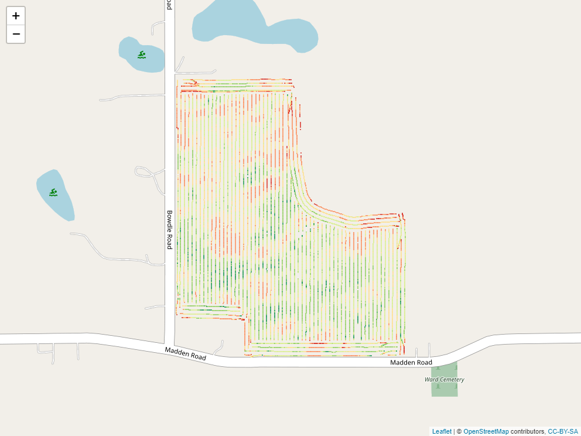
In the map above, the higher-yielding areas are colored green, while the lower-yielding areas are orange to red. How would we summarise the yields above for others?
To start with, let’s describe the center of the population. Should we use the mean or median? Either is appropriate if the data are normally distributed; if the data are skewed, the median will be a better measure of center. We can check the distribution using a histogram:
hist(logan$Yld_Vol_Dr)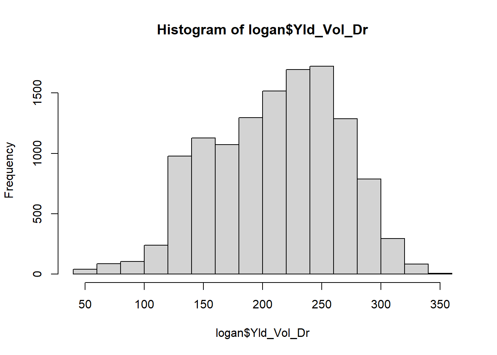 We inspect the data to see if it fits a normal distribution (“bell”) curve. This histogram is admittedly ugly, but is roughly symmetrical. We can also quickly inspect our distribution using the summary command on our yield variable.
summary(logan$Yld_Vol_Dr)## Min. 1st Qu. Median Mean 3rd Qu. Max.
## 50.1 169.2 216.6 211.1 252.3 348.2The median and mean are similar, so it would be acceptable to use either to describe the population center. Note the median is a little larger than the mean, so our data is skewed slightly to the right.
How would we describe the spread? That’s right: we would use the standard deviation:
sd(logan$Yld_Vol_Dr)## [1] 54.10512Our standard deviation is about 54 bushels. What is the significance of this? We would expect 95% of the individuals (the yield measures) in this population to be within 1.96 standard deviations, or $1.96 = 106.0 $, of the mean. Rounding our mean to 211, we would expect any value less than \(211 - 106 = 105\) or greater than \(211 + 105 = 316\) to occur rarely in our population.
14.2 Scenario 2: Yield Estimate (Sampling t-Distribution)
We are on a “Pro-Growers” tour of the Corn Belt or we are estimating yield on our own farm in anticipation of harvest or marketing grain.
Let’s take our field above and sample 20 ears from it. After counting rows around the ear and kernels per row, we arrive at the following 20 estimates.
## [1] 256 136 244 154 191 241 292 225 183 277 249 207 290 203 213 226 266 275 151
## [20] 181The mean of our samples is 223 bushels per acre. We know this is probably not the actual mean yield, but how can we define a range of values that is likely to include the true mean for this field?
We can calculate a 95% confidence interval for this field. That confidence interval defines a fixed distance above and below our sample mean. Were we to repeat our sampling 100 times, in about 95 of our samples the population mean would be within our confidence interval.
Remember, our confidence interval is calculated as:
\[ CI = \bar{x} + t_{\alpha, df}\times SE\]
Where \(\bar{x}\) is the sample mean, \(t\) is the t-value, based on our desired level of confidence and the degrees of freedom, and \(SE\) is the standard error of the mean. In this case, we desire 95% confidence and have 19 degrees of freedom (since we have 20 samples). The t-value to use in our calculation is therefore:
t_value = qt(0.975, 20)
t_value## [1] 2.085963Our standard error is equal to the standard deviation of our samples.
yield_sd = sd(yield_sample)
yield_sd## [1] 46.97144Our standard error of the mean is our sample standard deviation, divided by the square root of the number of observations (20 ears) in the sample:
SE = yield_sd/sqrt(20)
SE## [1] 10.50313Our confidence interval has a lower limit of \(223 - 2.09*10.5 = 201.1\) and an upper limit of \(223 + 2.09*10.5 = 244.9\). We would present this confidence interval as:
\[ (201.1,244.9) \]
We know the combine map aboe the true population mean was 211.1, which is included in our confidence interval.
14.3 Scenario 3: Side-By-Side (t-Test)
You are a sales agronomist and want to demonstrate a new product to your customer. You arrange to conduct a side-by-side trial on their farm.
Knowing every field has soil variations, you divide a field into 8 pairs of strips. Each strip in a pair is treated either with the farmer’s current system (the control) or the farmer’s system plus the new product. You create the following paired plot layout.
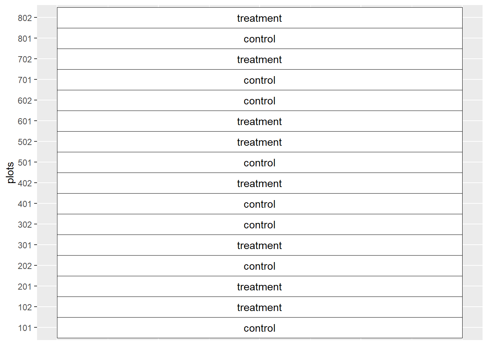
We observe the following values in our trial:
| block | treatment | yield |
|---|---|---|
| 1 | control | 172.2 |
| 1 | treatment | 170.9 |
| 2 | treatment | 168.7 |
| 2 | control | 169.1 |
| 3 | treatment | 178.3 |
| 3 | control | 144.8 |
| 4 | control | 178.5 |
| 4 | treatment | 183.5 |
| 5 | control | 177.6 |
| 5 | treatment | 193.6 |
| 6 | treatment | 186.8 |
| 6 | control | 176.5 |
| 7 | control | 172.7 |
| 7 | treatment | 196.0 |
| 8 | control | 188.9 |
| 8 | treatment | 183.7 |
We run a t-test, as we learned in Units 4 and 5, which calculates the probability the difference between the control and treatment is equal to zero. Because we, as sales persons, are only interested in whether our treatment produces greater yield, we run a one-sided test. Our null hypothesis is therefore that the treatment produces yield equal to or less than the control. Our alternative hypothesis (the one we hope to confirm) is that the treatment yields more than the control.
t_test = t.test(yield ~ treatment, data=yields, paired=TRUE, alternative="less")
t_test##
## Paired t-test
##
## data: yield by treatment
## t = -2.1424, df = 7, p-value = 0.03469
## alternative hypothesis: true difference in means is less than 0
## 95 percent confidence interval:
## -Inf -1.174144
## sample estimates:
## mean of the differences
## -10.15In the t-test above, we tested the difference when we subtracted the control yield from the treatment yield. We hoped this difference would be less than zero, which it would be if the treatment yield exceeded the control yield. We see the difference, -10.15, was indeed less than zero. Was it significant? Our p-value was 0.03, indicating a small probability that the true difference was actually zero or greater than zero.
We also see our confidence interval does not include zero or any positive values. We can therefore report to the grower that our treatment yielded more than the control.
14.4 Scenario 4: Fungicide Trial (ANOVA CRD or RCBD)
We want to compare three or more fungicides that differ in their qualities, as opposed to their quantity.
We design and conduct a randomized complete block design experiment in which four fungicides are compared:
| plot | block | fungicide | yield |
|---|---|---|---|
| 101 | 1 | Deadest | 174.4 |
| 102 | 1 | Dead | 169.5 |
| 103 | 1 | Dead Again | 176.9 |
| 104 | 1 | Deader | 170.6 |
| 201 | 2 | Dead Again | 175.7 |
| 202 | 2 | Deadest | 175.5 |
| 203 | 2 | Deader | 171.9 |
| 204 | 2 | Dead | 170.9 |
| 301 | 3 | Deader | 172.5 |
| 302 | 3 | Dead Again | 178.2 |
| 303 | 3 | Dead | 170.9 |
| 304 | 3 | Deadest | 175.6 |
| 401 | 4 | Deadest | 176.7 |
| 402 | 4 | Deader | 174.1 |
| 403 | 4 | Dead Again | 177.8 |
| 404 | 4 | Dead | 170.7 |
We can begin our analysis of results by inspecting the distribution of observations within our treatment. We can take a quick look at our data with the boxplot we learned in Unit 9.
fungicide_final %>%
ggplot(aes(x=fungicide, y=yield)) +
geom_boxplot(outlier.colour="black", outlier.shape=16,
outlier.size=2, notch=FALSE, fill="lightblue") +
coord_flip() +
stat_summary(fun=mean, geom="point", shape=23, size=2)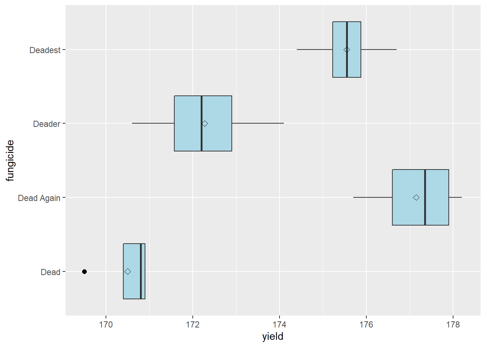
Hmmmm, fungicide “Dead” has an outlier. Shoots. Let’s look more closely at our situation. First, back to our field notes. We check our plot notes – nothing appeared out of the ordinary about that plot. Second, we notice the “Dead” treatment has a tighter distribution than the other three treatments: our outlier would not be an outlier had it occurred in the distribution of Deader. Finally, we note the outlier differs from from the mean and median of “Dead” by only a few bushels – a deviation we consider to be reasonable given our knowledge of corn production. We conclude the outlier can be included in the dataset.
We will go ahead and run an Analysis of Variance on these data, as we learned in Unit 8. Our linear model is:
\[ Y_{ij}=\mu + B_i + T_j + BT_{ij}\] Where \(\mu\) is the population mean, \(Y\) is the yield of the \(j_{th}\) treatment in the \(i_{th}\) block, \(B\) is the effect of the \(i_{th}\) block, \(T\) is the effect of the \(j_{th}\) treatment, and \(BT_{ij}\) is the interaction between block and treatment. This model forms the basis of our model statement to R:
fungicide_model = aov(yield ~ block + fungicide, data=fungicide_final)
summary(fungicide_model)## Df Sum Sq Mean Sq F value Pr(>F)
## block 3 9.10 3.03 5.535 0.0197 *
## fungicide 3 109.93 36.64 66.884 1.79e-06 ***
## Residuals 9 4.93 0.55
## ---
## Signif. codes: 0 '***' 0.001 '**' 0.01 '*' 0.05 '.' 0.1 ' ' 1We see the effect of the fungicide treatment is highly significant, so we will separate the means using the LSD test we learned in Unit 8.
library(agricolae)
lsd = LSD.test(fungicide_model, "fungicide")
lsd## $statistics
## MSerror Df Mean CV t.value LSD
## 0.5478472 9 173.8688 0.4257045 2.262157 1.183961
##
## $parameters
## test p.ajusted name.t ntr alpha
## Fisher-LSD none fungicide 4 0.05
##
## $means
## yield std r LCL UCL Min Max Q25 Q50
## Dead 170.500 0.6733003 4 169.6628 171.3372 169.5 170.9 170.400 170.80
## Dead Again 177.150 1.1090537 4 176.3128 177.9872 175.7 178.2 176.600 177.35
## Deader 172.275 1.4522970 4 171.4378 173.1122 170.6 174.1 171.575 172.20
## Deadest 175.550 0.9398581 4 174.7128 176.3872 174.4 176.7 175.225 175.55
## Q75
## Dead 170.900
## Dead Again 177.900
## Deader 172.900
## Deadest 175.875
##
## $comparison
## NULL
##
## $groups
## yield groups
## Dead Again 177.150 a
## Deadest 175.550 b
## Deader 172.275 c
## Dead 170.500 d
##
## attr(,"class")
## [1] "group"Each of the fungicides produced significantly different yields, with “Dead Again” the highest-yielding. We can plot these results in a bar-plot.
lsd_groups = lsd$groups %>%
rownames_to_column("fungicide")
lsd_groups %>%
ggplot(aes(x=fungicide, y=yield)) +
geom_bar(stat = "identity", fill="darkolivegreen", color="black")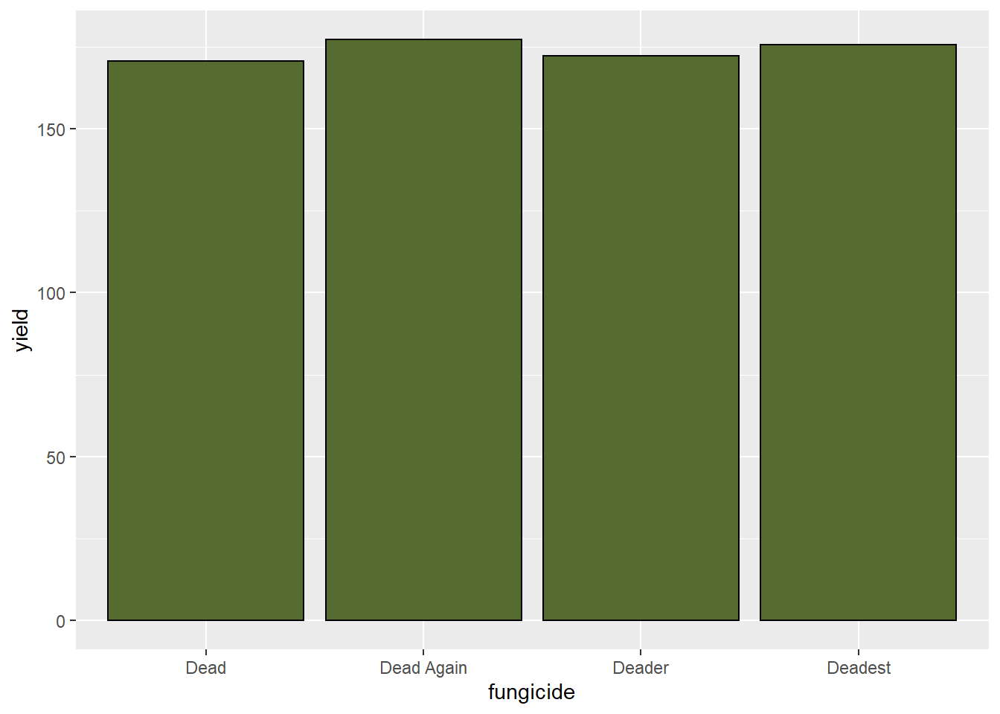
14.5 Scenario 5: Hybrid Response to Fungicide Trial (ANOVA Factorial or Split Plot)
We want to test two factors within the same trial: three levels of hybrid (Hybrids “A”, “B”, and “C”) and two levels of fungicide (“treated” and “untreated”).
The treatments are arranged in a factorial randomized complete block design, like we learned in Unit 7.
| plot | block | fungicide | hybrid | yield |
|---|---|---|---|---|
| 101 | R1 | treated | B | 199.1 |
| 102 | R1 | untreated | A | 172.1 |
| 103 | R1 | untreated | B | 187.4 |
| 104 | R1 | treated | C | 204.1 |
| 105 | R1 | untreated | C | 195.5 |
| 106 | R1 | treated | A | 187.2 |
| 201 | R2 | treated | A | 195.7 |
| 202 | R2 | untreated | C | 200.3 |
| 203 | R2 | treated | B | 200.3 |
| 204 | R2 | treated | C | 216.5 |
| 205 | R2 | untreated | A | 185.0 |
| 206 | R2 | untreated | B | 188.4 |
| 301 | R3 | treated | B | 209.4 |
| 302 | R3 | treated | A | 198.2 |
| 303 | R3 | untreated | A | 185.6 |
| 304 | R3 | untreated | C | 203.6 |
| 305 | R3 | untreated | B | 194.2 |
| 306 | R3 | treated | C | 220.4 |
| 401 | R4 | untreated | B | 198.7 |
| 402 | R4 | treated | B | 214.4 |
| 403 | R4 | treated | C | 219.2 |
| 404 | R4 | treated | A | 194.8 |
| 405 | R4 | untreated | A | 191.0 |
| 406 | R4 | untreated | C | 199.6 |
Our linear additive model is:
\[ Y_{ijk} = \mu + B_i + F_j + H_k + FH_{jk} + BFH_{ijk} \]
where \(Y_{ijk}\) is the yield in the \(ith\) block with the \(jth\) level of fungicide and the \(kth\) level of hybrid, \(\mu\) is the population mean, \(B_i\) is the effect of the \(ith\) block, \(F_j\) is the effect of the \(jth\) level of fungicide, \(H_k\) is the effect of the \(kth\) level of hybrid, \(FH_{jk}\) is the interaction of the $jth level of fungicide and \(kth\) level of hybrid, and \(BFH_{ijk}\) is the interaction of block, fungicide, and hybrid.
This translates to the following model statement and analysis of variance:
fung_hyb_model = aov(yield ~ block + fungicide + hybrid + fungicide*hybrid, data = fung_hyb_final)
summary(fung_hyb_model)## Df Sum Sq Mean Sq F value Pr(>F)
## block 3 538.1 179.4 15.92 6.27e-05 ***
## fungicide 1 1038.9 1038.9 92.22 8.49e-08 ***
## hybrid 2 1403.4 701.7 62.29 5.43e-08 ***
## fungicide:hybrid 2 23.2 11.6 1.03 0.381
## Residuals 15 169.0 11.3
## ---
## Signif. codes: 0 '***' 0.001 '**' 0.01 '*' 0.05 '.' 0.1 ' ' 1The Analysis of Variance results above, show that the main effects – fungicide and hybrid – are both highly-significant, but the interaction between fungicide and hybrid is insignificant. The line plot below allows us to further examine that interaction.
fung_hyb %>%
group_by(fungicide, hybrid) %>%
summarise(yield = mean(yield)) %>%
ungroup %>%
ggplot(aes(x=hybrid, y=yield, group=fungicide)) +
geom_point(aes(color=fungicide)) +
geom_line(aes(color=fungicide))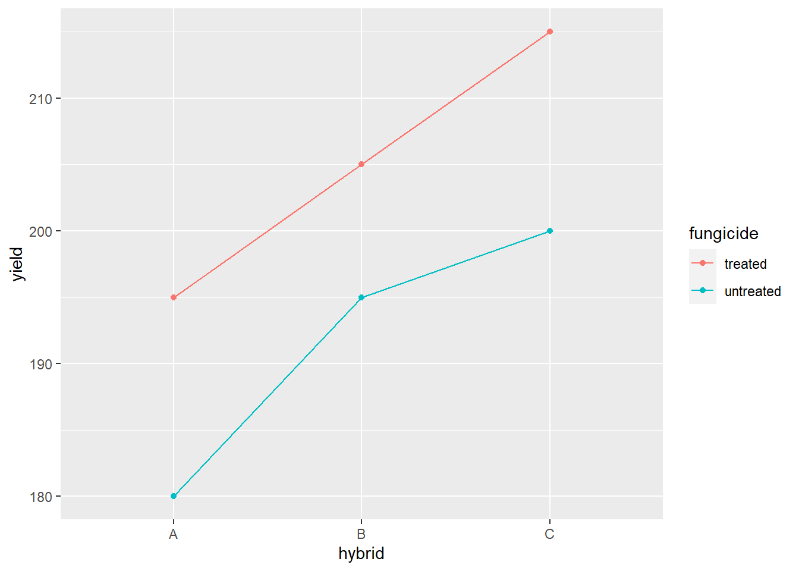
We can perform means separation on the data the same as we did for our analysis of variance in the previous example. Since fungicide only has two levels, its significance in the analysis of variance means the two levels (“treated” and “untreated”) are significant. To separate the hybrid levels, we can use the least siginficant difference test.
lsd_fung_hybrid = LSD.test(fung_hyb_model, "hybrid")
lsd_fung_hybrid## $statistics
## MSerror Df Mean CV t.value LSD
## 11.26542 15 198.3625 1.692053 2.13145 3.576998
##
## $parameters
## test p.ajusted name.t ntr alpha
## Fisher-LSD none hybrid 3 0.05
##
## $means
## yield std r LCL UCL Min Max Q25 Q50 Q75
## A 188.7000 8.305420 8 186.1707 191.2293 172.1 198.2 185.450 189.10 195.025
## B 198.9875 9.388966 8 196.4582 201.5168 187.4 214.4 192.750 198.90 202.575
## C 207.4000 9.777817 8 204.8707 209.9293 195.5 220.4 200.125 203.85 217.175
##
## $comparison
## NULL
##
## $groups
## yield groups
## C 207.4000 a
## B 198.9875 b
## A 188.7000 c
##
## attr(,"class")
## [1] "group"Our means separation results suggest the three hybrids differ in yield.
14.6 Scenario 6: Foliar Rate-Response Trial (Linear or Non-Linear Regression)
We want to model how the the effect of a foliar product on yield increases with rate, from 1X to 4X.
The data are below:
| plot | block | rate | yield |
|---|---|---|---|
| 101 | 1 | 2 | 167.1 |
| 102 | 1 | 3 | 168.7 |
| 103 | 1 | 4 | 169.5 |
| 104 | 1 | 1 | 165.2 |
| 201 | 2 | 2 | 167.2 |
| 202 | 2 | 1 | 164.8 |
| 203 | 2 | 4 | 169.4 |
| 204 | 2 | 3 | 170.2 |
| 301 | 3 | 2 | 167.8 |
| 302 | 3 | 4 | 170.2 |
| 303 | 3 | 1 | 166.1 |
| 304 | 3 | 3 | 169.8 |
| 401 | 4 | 2 | 169.3 |
| 402 | 4 | 3 | 171.1 |
| 403 | 4 | 4 | 171.5 |
| 404 | 4 | 1 | 165.1 |
We should start by plotting our data with a simple scatter plot so we can observe the nature of the relationship between Y and X. Do their values appear to be associated? Is their relationship linear or nonlinear?
p = foliar_final %>%
ggplot(aes(x=rate, y=yield)) +
geom_point()
p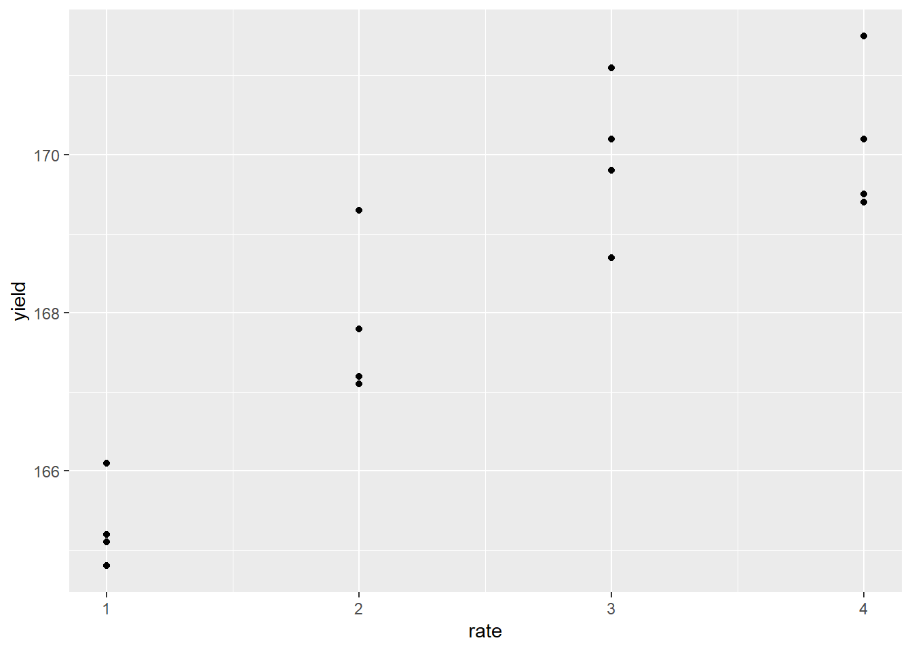
The response appears to be nonlinear, but we first try to fit the relationship with simple linear regression, as we learned in Unit 10. Our regression line is plotted with the data below:
p + geom_smooth(method = "lm", se=FALSE)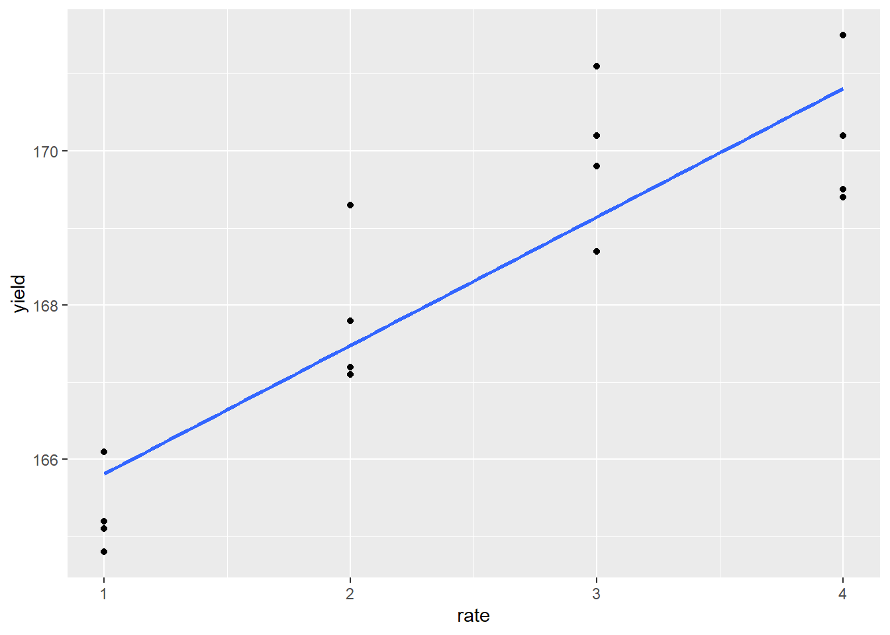
We also run an analysis of variance on the regression, modelling yield as a function of rate, which produces the following results:
foliar_linear_model = lm(yield~rate, data = foliar_final)
summary(foliar_linear_model)##
## Call:
## lm(formula = yield ~ rate, data = foliar_final)
##
## Residuals:
## Min 1Q Median 3Q Max
## -1.4100 -0.6400 -0.3300 0.6637 1.9550
##
## Coefficients:
## Estimate Std. Error t value Pr(>|t|)
## (Intercept) 164.1500 0.6496 252.70 < 2e-16 ***
## rate 1.6650 0.2372 7.02 6.06e-06 ***
## ---
## Signif. codes: 0 '***' 0.001 '**' 0.01 '*' 0.05 '.' 0.1 ' ' 1
##
## Residual standard error: 1.061 on 14 degrees of freedom
## Multiple R-squared: 0.7787, Adjusted R-squared: 0.7629
## F-statistic: 49.27 on 1 and 14 DF, p-value: 6.057e-06Not bad. The slope (rate effect) is highly significant and the \(R^2 = 0.75\). To see whether the linear model was appropriate, however, we should plot the residuals.
plot(foliar_linear_model, which = 1)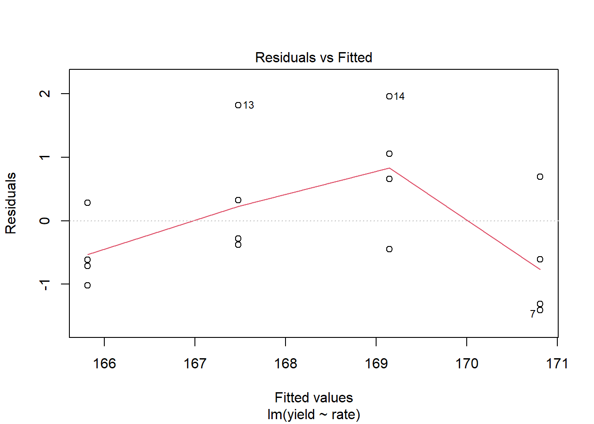
We see, as we might expect, the residuals are not distributed randomly around the regression line. The middle two yields are distributed mostly above the regression line, while the highest and lowest yields are distributed mostly below the regression line.
A linear model is probably not the best way to model our data. Lets try, instead, to fit the data with a asymptotic model as we did in Unit 11. This model, in which the value of Y increases rapidly at lower levels of X, but then plateaus at higher levels of X, is often also referred to as a monomolecular function.
foliar_monomolecular = stats::nls(yield ~ SSasymp(rate,init,m,plateau), data=foliar_final)
summary(foliar_monomolecular)##
## Formula: yield ~ SSasymp(rate, init, m, plateau)
##
## Parameters:
## Estimate Std. Error t value Pr(>|t|)
## init 171.1636 1.2699 134.789 <2e-16 ***
## m 159.7711 3.0120 53.044 <2e-16 ***
## plateau -0.4221 0.4880 -0.865 0.403
## ---
## Signif. codes: 0 '***' 0.001 '**' 0.01 '*' 0.05 '.' 0.1 ' ' 1
##
## Residual standard error: 0.9104 on 13 degrees of freedom
##
## Number of iterations to convergence: 0
## Achieved convergence tolerance: 4.011e-06We are successful in fitting our nonlinear model. To plot it with our data, however, we have to build a new dataset that models yield as a function of rate, using our new model.
To do this, we first create a dataset with values of rate from 1X and 4X, in increments of tenths.
foliar_predicted = data.frame( # this tells R to create a new data frame called foliar_predicted
rate = # this tells R to create a new column named "rate"
seq(from=1,to=4,by=0.1) # this creates a sequence of numbers from 1 to 4, in increments of 0.1
)We then can predict yield as a function of rate, using the new model.
foliar_predicted$yield = predict(foliar_monomolecular, foliar_predicted)Finally, we can plot our curve and visually confirm it fits the data better than our linear model.
p + geom_line(data = foliar_predicted, aes(x=rate, y=yield), color="tomato")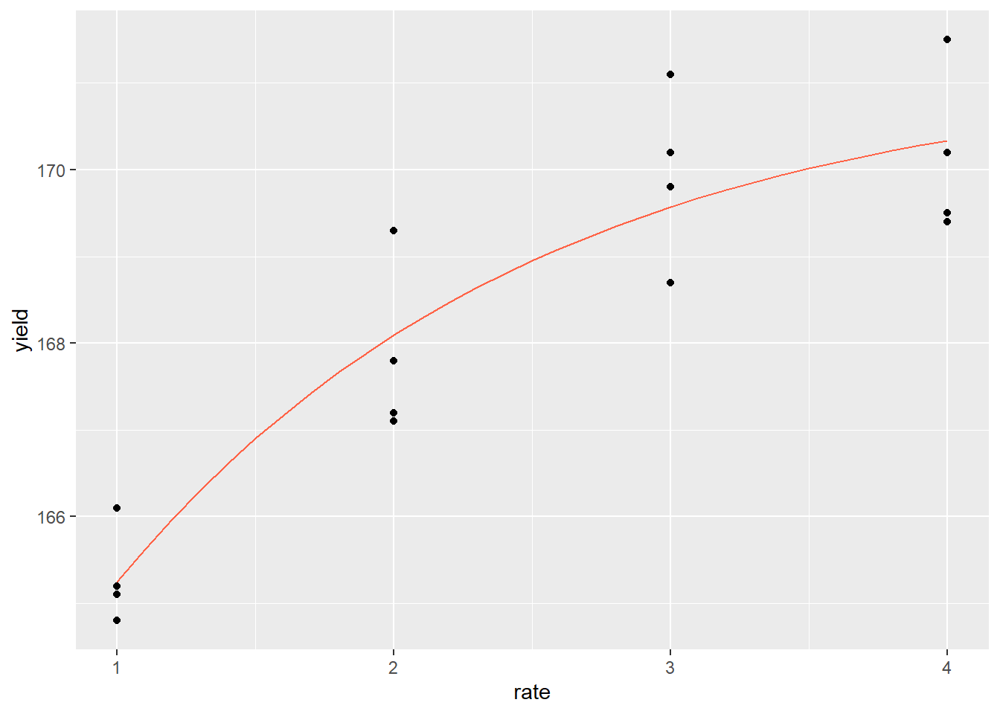
14.7 Scenario 7: Application Map (Shapefiles and Rasters)
We grid sample our field and want to visualize the results. We are particularly interested in our soil potassium results. We want to first visualize the point values, then create a raster map to predict potassium values throughout the field.
We start by reading in the shapefile with our results.| obs | Sample_id | SampleDate | ReportDate | P2 | Grower | Field | attribute | measure | geometry |
|---|---|---|---|---|---|---|---|---|---|
| 29 | 21 | 10/26/2018 | 10/30/2018 | 0 | Tom Besch | Folie N & SE | Om | 3.2 | POINT (-92.78954 43.9931) |
| 30 | 22 | 10/26/2018 | 10/30/2018 | 0 | Tom Besch | Folie N & SE | Om | 3.8 | POINT (-92.7895 43.9926) |
| 31 | 27 | 10/26/2018 | 10/30/2018 | 0 | Tom Besch | Folie N & SE | Om | 3.3 | POINT (-92.78942 43.98697) |
| 32 | 5 | 10/26/2018 | 10/30/2018 | 0 | Tom Besch | Folie N & SE | Om | 5.9 | POINT (-92.79313 43.99245) |
| 33 | 6 | 10/26/2018 | 10/30/2018 | 0 | Tom Besch | Folie N & SE | Om | 3.1 | POINT (-92.79294 43.99318) |
| 34 | 8 | 10/26/2018 | 10/30/2018 | 0 | Tom Besch | Folie N & SE | Om | 1.8 | POINT (-92.79145 43.9902) |
Our next step is to filter our results to potassium (“K”) only.
k_only = folie %>%
filter(attribute=="K")We want to color-code our results with green for the greatest values, yellow for intermediate values, and red for the lowest values. We can do this using the colorBin function.
library(leaflet)
library(grDevices)
pal_k = colorBin("RdYlGn", k_only$measure)We then create our map using the leaflet() function, just as we learned in Unit 12.
m <- k_only %>%
leaflet() %>%
addTiles() %>%
addCircleMarkers(
fillColor = ~pal_k(measure),
radius = 6,
weight = 0,
fillOpacity = 0.8
) %>%
addLegend(values = ~measure,
pal = pal_k)
#above code won't knit -- created static image for markdown
saveWidget(m, "temp.html", selfcontained = FALSE)
webshot("temp.html", cliprect = "viewport")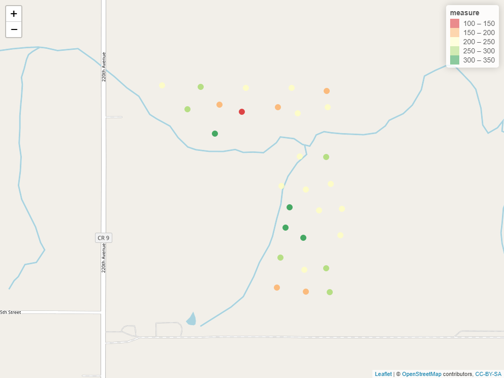
Next, we want to create a raster map that predicts soil potassium levels throughout our field. We first need to define the field boundary, which we do by loading a shapefile that defines a single polygon that outlines our field.
boundary = st_read("data-unit-14/Folie N &SE_boundary.shp", quiet=TRUE)We then use that boundary polygon to create a grid. Each cell of this grid will be filled in when we create our raster.
library(stars)
### make grid
grd = st_bbox(boundary) %>%
st_as_stars() %>%
st_crop(boundary) Each cell in our raster that does not coincide with a test value will be predicted as the mean of the values of other soil test points. Since soils that are closer together are more alike than those that are farther apart, soil test points that are closer to the estimated cell will be weighted more heavily in calculating the mean than those more distant. How should they be weighted?
To answer this, we fit a variogram to the data. The variogram describes how the correlation between points changes with distance.
library(gstat)
v = variogram(measure~1, k_only)
m = fit.variogram(v, vgm("Sph"))
plot(v, model = m)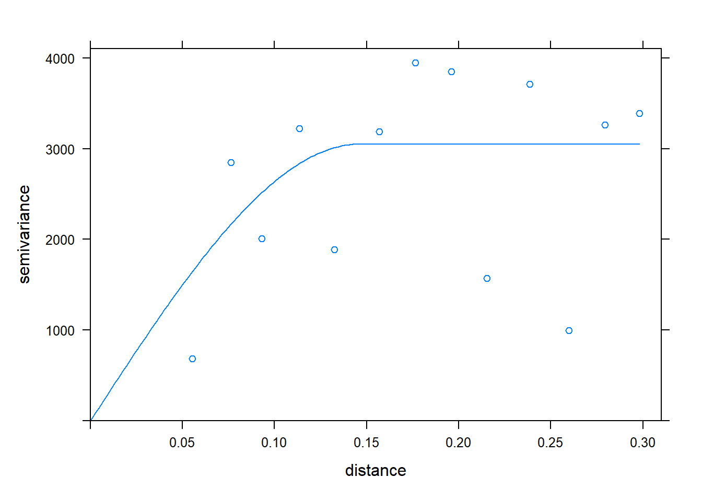
We are now able to interpolate our data with krigining, which incorporates the results of our variogram in weighting the effect of sample points in the estimate of a cell value.
kriged_data = gstat::krige(formula = measure~1, k_only, grd, model=m)## [using ordinary kriging]We finish by plotting our kriged data using leaflet().
library(RColorBrewer)
library(leafem)
m <- kriged_data %>%
leaflet() %>%
addTiles() %>%
addStarsImage(opacity = 0.5,
colors="RdYlGn")
#above code won't knit -- created static image for markdown
saveWidget(m, "temp.html", selfcontained = FALSE)
webshot("temp.html", cliprect = "viewport")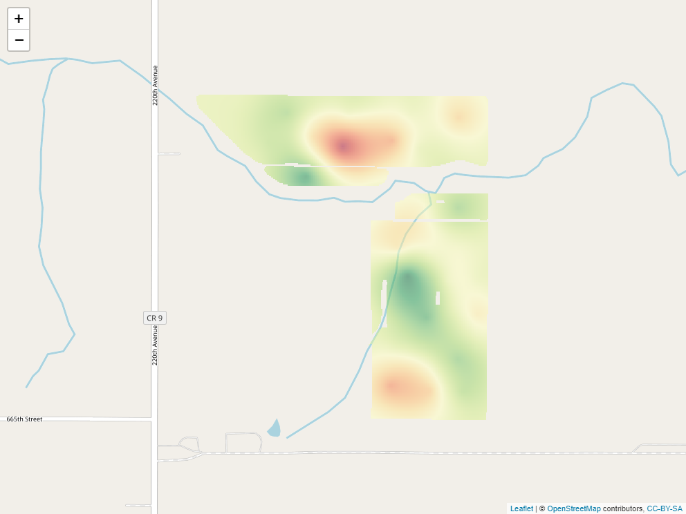
14.8 Scenario 8: Yield Prediction (Multiple Linear Regression and other Predictive Models)
We want to predict the yield for a particular hybrid across 676 midwestern counties, based on over 300 observations of that hybrid.
We start by reading in the shapefile with our hybrid data.
## Reading layer `hybrid_data' from data source
## `C:\ds_ag_professionals\data-unit-14\hybrid_data.shp' using driver `ESRI Shapefile'
## Simple feature collection with 4578 features and 4 fields
## Geometry type: POINT
## Dimension: XY
## Bounding box: xmin: -104.8113 ymin: 37.56348 xmax: -81.08706 ymax: 46.24
## Geodetic CRS: WGS 84## Simple feature collection with 6 features and 4 fields
## Geometry type: POINT
## Dimension: XY
## Bounding box: xmin: -99.80072 ymin: 42.54919 xmax: -89.77396 ymax: 43.77493
## Geodetic CRS: WGS 84
## book_name year attribute value geometry
## 1 ADAMS-MN 2016 bu_acre 215.4100 POINT (-92.26931 43.57388)
## 2 Adams-WI 2016 bu_acre 257.0930 POINT (-89.77396 43.77493)
## 3 Ainsworth-NE 2016 bu_acre 236.5837 POINT (-99.80072 42.55031)
## 4 Ainsworth-NE 2017 bu_acre 244.3435 POINT (-99.80072 42.55031)
## 5 Ainsworth-NE 2019 bu_acre 220.0456 POINT (-99.79738 42.54919)
## 6 Algona-IA 2016 bu_acre 216.0600 POINT (-94.28736 42.97575)The attributes are organized in the long form so we will want to “spread” or pivot them to the wide form first.
hybrid_wide = hybrid %>%
spread(attribute, value)
head(hybrid_wide)## Simple feature collection with 6 features and 16 fields
## Geometry type: POINT
## Dimension: XY
## Bounding box: xmin: -99.80072 ymin: 42.54919 xmax: -89.77396 ymax: 43.77493
## Geodetic CRS: WGS 84
## book_name year bu_acre clay om prcp_0_500 prcp_1001_1500
## 1 ADAMS-MN 2016 215.4100 23.939049 149.7867 152 167
## 2 Adams-WI 2016 257.0930 9.899312 438.3402 140 112
## 3 Ainsworth-NE 2016 236.5837 11.701055 143.7150 97 63
## 4 Ainsworth-NE 2017 244.3435 11.701055 143.7150 148 16
## 5 Ainsworth-NE 2019 220.0456 11.701055 143.7150 234 22
## 6 Algona-IA 2016 216.0600 25.283112 480.4145 96 144
## prcp_1501_2000 prcp_501_1000 sand silt tmean_0_500 tmean_1001_1500
## 1 84 122 16.96170 59.09925 14.32143 21.91071
## 2 152 39 78.38254 11.71815 16.74286 22.30357
## 3 79 50 69.87984 18.41910 15.72857 22.38095
## 4 212 12 69.87984 18.41910 15.96428 26.11905
## 5 142 116 69.87984 18.41910 16.32143 23.82143
## 6 55 72 37.38857 37.32832 16.19286 21.26191
## tmean_1501_2000 tmean_501_1000 whc geometry
## 1 22.05952 21.45238 27.98555 POINT (-92.26931 43.57388)
## 2 21.83333 20.13095 15.67212 POINT (-89.77396 43.77493)
## 3 23.77381 24.00000 18.41579 POINT (-99.80072 42.55031)
## 4 21.34821 20.64286 18.41579 POINT (-99.80072 42.55031)
## 5 22.46429 21.69048 18.41579 POINT (-99.79738 42.54919)
## 6 22.89286 23.32143 33.21381 POINT (-94.28736 42.97575)Similarly, lets load in the county data. Like the hybrid dataset, it is in long form, so lets again spread or pivot it to the long form so that the attributes each have their own column.
county_climates = st_read("data-unit-14/county_climates.shp")## Reading layer `county_climates' from data source
## `C:\ds_ag_professionals\data-unit-14\county_climates.shp' using driver `ESRI Shapefile'
## Simple feature collection with 8788 features and 8 fields
## Geometry type: MULTIPOLYGON
## Dimension: XY
## Bounding box: xmin: -106.1954 ymin: 36.99782 xmax: -80.51869 ymax: 47.24051
## Geodetic CRS: WGS 84county_climates_wide = county_climates %>%
spread(attribt, value)
head(county_climates_wide)## Simple feature collection with 6 features and 19 fields
## Geometry type: MULTIPOLYGON
## Dimension: XY
## Bounding box: xmin: -105.6932 ymin: 38.61245 xmax: -102.0451 ymax: 40.26278
## Geodetic CRS: WGS 84
## stco stt_bbv stt_fps cnty_nm fps_cls stat_nm clay om
## 1 8001 CO 08 Adams County H1 Colorado 21.88855 102.0773
## 2 8005 CO 08 Arapahoe County H1 Colorado 23.87947 102.4535
## 3 8013 CO 08 Boulder County H1 Colorado 25.83687 106.2404
## 4 8017 CO 08 Cheyenne County H1 Colorado 23.67021 105.8340
## 5 8039 CO 08 Elbert County H1 Colorado 22.00638 117.1232
## 6 8063 CO 08 Kit Carson County H1 Colorado 24.78930 159.3644
## prcp_0_500 prcp_1001_1500 prcp_1501_2000 prcp_501_1000 sand silt
## 1 72.05263 44.15789 43.84211 31.68421 47.83218 30.27927
## 2 58.20000 43.20000 33.80000 17.00000 41.83093 34.28960
## 3 100.38462 47.84615 67.46154 58.07692 42.52472 31.63841
## 4 57.42105 54.52632 61.73684 37.26316 25.24085 51.08894
## 5 82.35714 57.64286 47.71429 49.28571 45.78082 32.21280
## 6 68.05263 54.26316 76.52632 43.36842 26.70159 48.50911
## tmean_0_500 tmean_1001_1500 tmean_1501_2000 tmean_501_1000 whc
## 1 16.06967 24.17904 22.77083 21.65316 22.03449
## 2 15.64571 24.02857 22.46845 21.42024 21.34191
## 3 12.94062 18.60742 13.54932 19.00073 22.04795
## 4 17.02484 24.85072 24.18186 22.41526 30.14545
## 5 14.86390 22.27912 20.54928 20.41850 19.80896
## 6 16.74041 24.50439 23.56375 22.10329 26.92315
## geometry
## 1 MULTIPOLYGON (((-105.0529 3...
## 2 MULTIPOLYGON (((-105.0534 3...
## 3 MULTIPOLYGON (((-105.0826 3...
## 4 MULTIPOLYGON (((-103.1725 3...
## 5 MULTIPOLYGON (((-104.6606 3...
## 6 MULTIPOLYGON (((-103.1631 3...First, lets plot the locations of our hybrid trials:
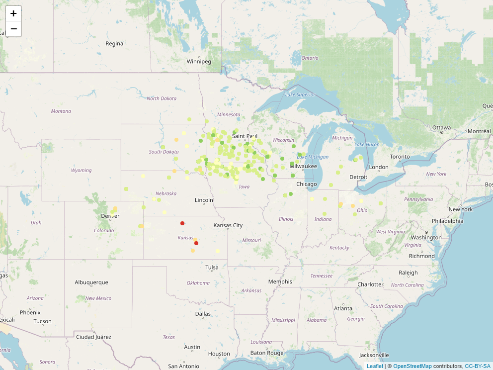 We see our trials were conducted mostly in northern Iowa and southern Minnesota, but also in several other states. We will want to constrain our predictions to counties in this general area. That requires a few steps that we didn’t cover this semester (the very curious can look up “convex hulls”). Our county dataset has been limited to the appropriate counties for our predictions:
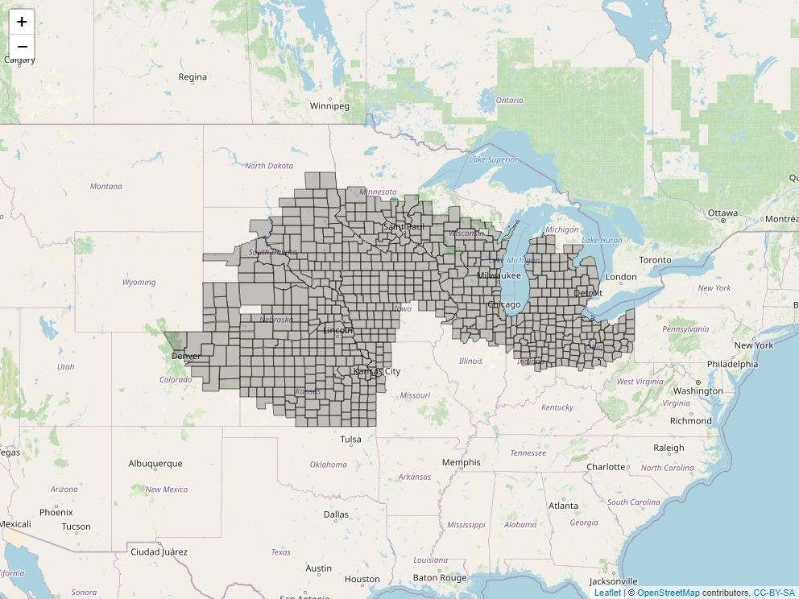
Our next step is to develop our random forest model to predict yield. Recall that the predictor variables in a random forest model are called features. Our data has the following features:
| attribute | description |
|---|---|
| clay | % clay |
| om | % organic matter |
| prcp_0_500 | precip from 0 to 500 GDD |
| prcp_1001_1500 | precip from 1001 to 1500 GDD |
| prcp_1501_2000 | precip from 1501 to 2000 GDD |
| prcp_501_1000 | precip from 501 to 1000 GDD |
| sand | % sand |
| silt | % silt |
| tmean_0_500 | mean temp from 0 to 500 GDD |
| tmean_1001_1500 | mean temp from 1001 to 1500 GDD |
| tmean_1501_2000 | mean temp from 1501 to 2000 GDD |
| tmean_501_1000 | mean temp from 501 to 1000 GDD |
| whc | water holding capacity |
GDD are growing degree days accumulated from the historical average date at which 50% of the corn crop has been planted in each county. For example, prcp_0_500 is the cumulative precipitation from 0 to 500 GDD after planting. This would correspond with germination and seedling emergence.
We run our random forest the same as we learned in Unit 13. We have a couple of extraneous columns (book_name and year) in our hybrid_wide dataset. It is also a shapefile; we need to drop the geometry column and convert it into a dataframe before using it. We will do that first.
hybrid_df = hybrid_wide %>%
st_drop_geometry() %>%
dplyr::select(-c(book_name, year))We will use 10-fold cross validation (indicated by the “repeatedcv” option in our trainControl() function below.)
library(caret)
library(randomForest)
ctrl = trainControl(method="repeatedcv", number=10, repeats = 1)We can now fit our random forest model to the data.
hybridFit = train(bu_acre ~ .,
data = hybrid_df,
method = "rf",
trControl = ctrl)
hybridFit## Random Forest
##
## 327 samples
## 13 predictor
##
## No pre-processing
## Resampling: Cross-Validated (10 fold, repeated 1 times)
## Summary of sample sizes: 295, 294, 295, 294, 295, 295, ...
## Resampling results across tuning parameters:
##
## mtry RMSE Rsquared MAE
## 2 34.52569 0.1436353 25.86010
## 7 34.95068 0.1426655 26.24718
## 13 35.42862 0.1309118 26.53165
##
## RMSE was used to select the optimal model using the smallest value.
## The final value used for the model was mtry = 2.These values aren’t great. The \(R^2\) of the optimal model (top line, mtry = 2) is only about 0.16 and the root mean square error is above 33 bushels. For simplicity in this example, we left out several additional environmental features. We might consider adding those back in and re-running the model.
Nonetheless, lets’ use our fit random forest model to predict yield across each county in our prediction space.
county_climates_wide$yield = predict(hybridFit, county_climates_wide)Finally, we can plot the results. We will again use a red-yellow-gree scheme to code counties by yield.
pal_yield = colorBin("RdYlGn", county_climates_wide$yield)
m <- county_climates_wide %>%
leaflet() %>%
addTiles() %>%
addPolygons(
color = "black",
fillColor=~pal_yield(yield),
weight=1,
fillOpacity = 0.8,
popup = paste(county_climates_wide$cnty_nm, "<br>",
"Yield =", as.character(round(county_climates_wide$yield,1)))) %>%
addLegend(values = ~yield,
pal = pal_yield)
#above code won't knit -- created static image for markdown
saveWidget(m, "temp.html", selfcontained = FALSE)
webshot("temp.html", cliprect = "viewport")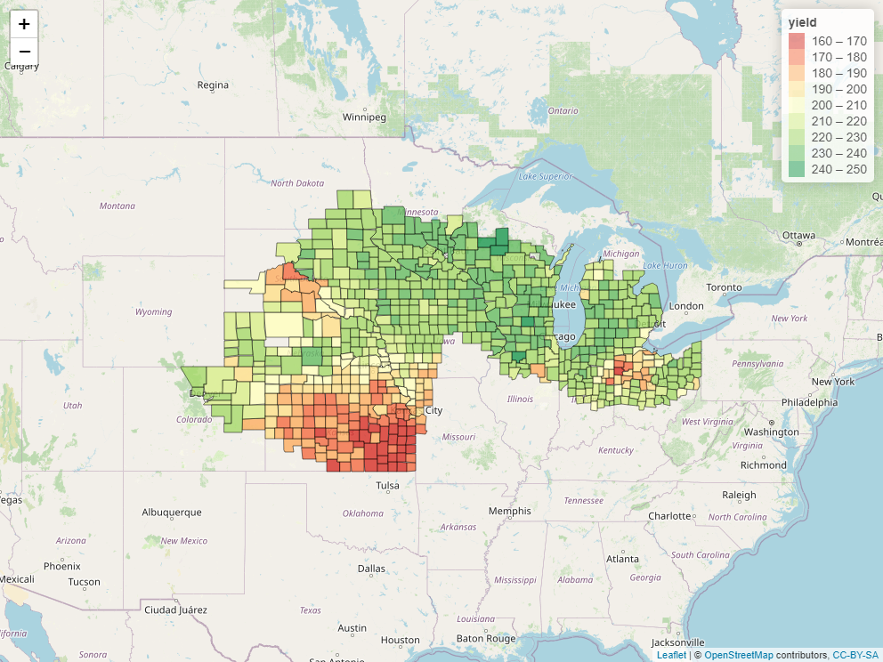 Our hybrid is predicted to yield best in northern Iowa, southern Minnesota, Wisconsin, and Northern Illinois. It is predicted to perform less well in Western Ohio and Kansas.
One last question: of our features, which had the greatest effect on the yield of this hybrid? We can answer that by running the vip() function with our model.
library(vip)
vip(hybridFit)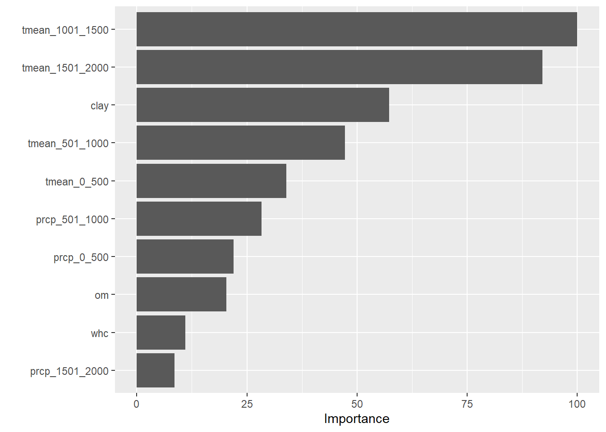
We see that mean temperature during later-vegetative (1001-1500 GDD) and reproductive (1501-2000 GDD) phases had the most effect in our model, followed by clay content.
14.9 Summary
And that is it for our whirlwind review of Data Science for Agricultural Professionals. While each scenario is discussed briefly, it is my hope that seeing the major tools we have learned side-by-side will give you a better sense where to start with your analyses.
For the sake of brevity, we didn’t cover every possible combination of these tools (for example, you should also inspect data distributions and perform means separation when working with factorial trials as well as simpler, single-factor trials). Once you have identified the general analysis to use, I encourage you to go back to the individual units for a more complete “recipe” how to conduct your analysis.
In fact, feel free to as a “cookbook” (in fact, several R texts label themselves as such), returning to it as needed to whip up a quick serving of t-tests, LSDs, or yield maps. Few of us ever memorize more than a small amount of material. Better to remember where to look it up in a hurry.
I hope you have enjoyed this text or, at least, found several pieces of it that can support you in your future efforts. I welcome your feedback and suggestions how it might be improved. Thank you.